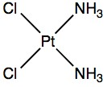

| METALS IN MEDICINE AND THE ENVIRONMENT | |||
| Metals | Peripheral Neuropathy and Metals | ||
|
Nerves play a large role in bodily function. The nervous system is broken into two parts: the Central Nervous System (CNS) and the Peripheral Nervous System (PNS) (Figure 1). The CNS is comprised of the brain and spinal cord while the PNS are the nerves that lead to and away from the CNS (1,2). The PNS has two major divisions: the afferent and the efferent divisions. The afferent division sends the signals from the body to the CNS and the efferent division controls voluntary and involuntary movement. Voluntary movement is the movement of arms or legs whereas involuntary movement is the pumping of blood by the heart (1). A nerve cell width is microscopic but the length can be measured in feet. The extensions that can be described as spider webs are called axons and are what detects pain, temperature, or texture and delivers the message to the cell to release neurotransmitters. A protective lipid coating called myelin, often referred to as the myelin sheath, covers these axons. Damage to the nervous system can be done to the axons, the myelin sheath, or both. Physical injury, disease, poisoning, or malnutrition can cause the damage (1).
Peripheral Neuropathy, also known as peripheral neuritis, is a neurological disorder that has many causes. It can be cause by disease, alcoholism, and toxins. These toxins can range from organic herbicides, to heavy metals, and pharmaceuticals (1, 2, 4, 5). In this discussion of peripheral neuropathy, the focus will be on heavy metals and metal-containing medicine. Peripheral neuropathy is damage to the peripheral nervous system. The symptoms can range from sensory, motor, or autonomic function. Depending on the type of nerve damaged, the symptoms will be different. For instance, if a sensory nerve is damaged, the symptoms are tingling, numbness, a prickling sensation, or pain. The pain is intense and feels like cutting, stabbing, crushing, or burning. Autonomic nerve damage is demonstrated by light-headedness upon standing or changes in blood pressure and weakness in the affected area is caused by motor nerve damage (1). There are three types of toxins that can be poisonous and cause peripheral neuropathy: medication, industrial chemicals, and heavy metals (1, 4). The heavy metals that cause peripheral neuropathy are lead, arsenic, thallium, and mercury. When these elements are in organic or inorganic compounds they become toxic to humans and animals. Arsenic poisoning can mimic Gullain-Barr disease. Lead will damage more motor nerves than sensory nerves and thallium will cause sensorimotor pain. Mercury has been shown to not only affect the PNS but the CNS as well (1). In order to diagnose peripheral neuropathy doctors will take a full medical and family history. The patient must describe, as precisely as possible, the pain and discomfort that they feel in order to determine the type of nerves that have been damaged. Damage to the myelin can be confirmed by electromyography. This study tests muscle reactions and if the myelin has been damaged, the nerve conduction will be slowed and weaker compared to normal (1). There is no cure for peripheral neuropathy. If the nerves have only been damaged, they can repair themselves but cannot be replaced. This repair cannot be done if the nerve has been killed (1). If the source of the peripheral neuropathy can be determined, then the exposure must be stopped. Some metal poisoning can be treated with chelation therapy but it has been shown to not help peripheral neuropathy side effects. In some cases, when exposure has been stopped, the neuropathy gets better, but usually patients will experience symptoms years after exposure has stopped (1,7). Arsenic Arsenic can be found naturally in soil, air, food, and water. People in the U.S. are exposed to arsenic through food and water. Neurological effects associated with arsenic are mainly from drinking water. Arsenic in the inorganic form can be acutely toxic but long-term exposure has been linked to some cancers. Cases of arsenic poisoning in India showed many different health effects, such as, peripheral vascular disease, noncirrhotic portal fibrosis, lung symptoms, and polyneuropathy (6). Investigations on the affects of arsenic in the drinking water in Bangledesh have been going on for many years. Some of the research has shown a large part of the population to have peripheral neuropathy caused by the chronic exposure to arsenic. These patients have an increased threshold for vibrations and a loss of sensory nerves (7). Neuropathy symptoms from arsenic begin 2-3 weeks after the first exposure. Pain starts in the lower extremities that later change to numbness and weakness. Eventually the symptoms progress to the upper extremities. Distal sensory loss, hypo- or areflexia, and weakening of the distal muscles are the signs for doctors. Weight loss, alopecia, and horizontal white lines on the nails are further clues to exposure. Severe exposure to arsenic can cause demyelination detected by electromyography (6). In some cases, 10 weeks after exposure, biopsies of the sural nerves were performed and damage to the axons still existed (7). Sulfur chelators like dimercaptosuccinic acid or penicillamine are initial treatments for arsenic exposure (6), see Figure 2. Although treatment may be started, the effects of arsenic poisoning on the neurological system may be life-long (7). a. b. Figure 2. a) dimercaptosuccinic acid b) penicillamine Lead Exposure could come from different occupations, paint, water, or food containers. Peripheral neuropathy is the most common effect on the nervous system by lead. In the case of lead as opposed to arsenic, the upper extremities are more affected than the lower extremities (4, 5). The affects are strictly to the motor nerves in a symmetric or asymmetric manner. Wrist drop is a symptom of weakened muscles from lead damaging the motor nerves in that area of the body (Figure 3) (5). Wrist drop occurred often in painters using lead paint. Painters would lick the tip of their brushes to bring it to a point resulting in chronic exposure (8).
Not only wrists are affected from lead exposure. The ankles may also weaken, causing foot drop. Some patients experience pain from mostly sensory polyneuropathy but it pales in comparison to the motor abnormalities. Symptoms unrelated to neuropathy are abdominal pain, constipation, and anemia. Without these other symptoms, diagnosis of lead poisoning would not be as immediate. When levels of lead in the blood are above 70 mg/100ml, electromyography shows a decrease in nerve conduction. Remyelination has been shown to occur in low levels of exposure; however, in high levels of exposure, destruction of axons occurs. Chelating agents such as ethylenediaminetetraacetic acid (EDTA) are used to rid the body of the lead but have not shown to have an effect of repairing nerve damage (5). Thallium Chemotherapy Drugs Taxol and cisplatin (see Figure 4) have become very useful anti-tumor drugs in the field of chemotherapy. Unfortunately, the cause for limiting the dose is the side effect of peripheral neuropathy. These drugs have affected both motor and sensory nerves. Taxol and cisplatin can be given together or separately. When given together, large and small-fiber sensory neuropathy is the side effect; however, when cisplatin is given alone, only large-fiber sensory neuropathy is observed (4). Since so much research has gone into developing such a useful anti-tumor drug, the medical profession wants to determine how and why cisplatin causes neuropathic damage. Some believe the neuropathy is caused by a disruption of the voltage-gated channels in the nervous system. Neurons use slight modifications in Ca2+ concentrations to communicate and signal. If the calcium concentrations are disrupted then the neurons will not function properly and the result would be a miscommunication or misfiring of the nervous system (9). Patients taking cisplatin have described peripheral neuropathy as a side effect. The symptoms described are numbness, tingling, and deep tendon reflexes being impaired. This describes sensory neuropathy and may be linked to changes in calcium ion concentrations. Cisplatin controls apoptosis, cell death, which is consistent with an increase in calcium ions. Researchers have given patients a calcium supplement that seems to have had an effect of protecting from severe neurotoxicity. German scientists have studied the voltage activated channel currents based on calcium, sodium, and phosphorus and the affect of the addition of cisplatin (9). These studies show that cisplatin directly effects calcium homeostasis and the addition of cisplatin reduce currents of voltage activated calcium channels. The most likely explanation for this is that cisplatin enters the neuron and triggers an intracellular pathway. This slows the activation of voltage activated calcium channels. This only affects small neurons because large neurons do not have this intracellular pathway. This finding is consistent with the symptoms that patients experience. Small neurons are responsible for sensitive responses whereas large neurons play more of a role in motor processes. The patients experience more sensitive nerve damage but still have the major motor process still intact (9).
a. b.  Figure 4. a) Taxol b) Cisplatin Treating the Symptoms Not much can be done for those who have developed peripheral neuropathy except managing the symptoms. The symptom that affects patients the most is the pain. Pain medications can help but do not relieve the pain. Pain medicine such as Darvocet-N and Vicodin are those that are prescribed most often. Anti-seizure medication has seemed to help patients the most, such as, Neurontin (gabapentin) and Lyrica (pregabalin). Tricyclic antidepressants have also played a role in the nervous system to antagonize the chemical process that signals pain to the CNS (2). In conclusion, peripheral neuropathy varies from person to person depending on the cause and length of exposure. More research must be done on the route of action these toxins take on in the body. Thanks to legislative action banning the use of lead, arsenic, and thallium in many of the chemicals used on a daily basis, poisoning by these metals has decreased. Unfortunately, the people who were exposed to them are still alive today and suffering from the repercussions of exposure. More research and development needs to be done to help these patients whose suffering will only get worse with time and for whom the pain medication does not work. (1) Barret, J. Peripheral Neuropathy. Health A to Z [Online] August 14, 2006. Gale Encyclopedia of Medicine. (accessed October 23, 2008). (2) Mayo Clinic. Nervous System: Peripheral Neuropathy.(accessed October 26, 2008). (3) Science Museum. Who Am I: Peripheral Nervous System. (accessed October 26, 2008). (4) Mizisin, A. P.; Powell, H. C. Toxic Neuropathies. Curr. Opin. Neuro. 1995, 8, 367-371. (5) Grogan, P. M.; Katz, J. S. Toxic Neuropathies. Neurol. Clin. 2005, 23, 377-396. (6) Abernathy, C.O., et al. Arsenic: Health Effects, Mechanisms of Actions, and Research Issues. Environ. Health Perspect. 1999, 107, 593-597. (7) Vahidnia, A.; van der Voet, G. B.; de Wolff, F. A. Arsenic Neurotoxicity – A Review. Hum. Exp. Toxicol. 2007, 26, 823-832. (8) Workshops of Horror. Lead Poisoning.(accessed October 26, 2008). (9) Tomaszewski, A.; Busselberg, D. Cisplatin modulates voltage gated channel currents of dorsal root ganglion neurons of rats. Neuro. Toxicol. 2007, 28, 49-58. Author: Morgan Moyer
|
|||
| Topics | |||
|
|||